Экспериментальный оптический пункт первой очереди (ЭОП-1) предназначен для:
- автономного обнаружения и последующего сопровождения космических объектов, в том числе фрагментов космического мусора, на низких, геостационарных, круговых полусуточных и высокоэллиптических орбитах;
- определения угловых координат и фотометрических характеристик обслуживаемых КО;
- оперативного отождествления (идентификации) обнаруженных космических объектов с КО из локальной базы данных ОЭК;
- выдачи полученной информации для обработки и анализа.


Технические возможности ЭОП-1
Зоной контроля ЭОП является верхняя полусфера, ограниченная минимальным углом места 12 градусов и высотами от 120 км до 200000 км. Оборудование ЭОП позволяет проводить автономный поиск КО в геостационарной области контроля, представляющей собой приэкваториальную область космического пространства на высотах от 30 000 км до 40 000 км и негеостационарной области контроля, представляющей собой часть зоны контроля ЭОП на высотах от 3500 км до 50000 км. ОЭК-40 с полем зрения 2.2х2.2 градуса предназначен для сопровождения фрагментов космического мусора на геостационарной и высокоэллиптических орбитах, ОЭК-25 с полем зрения 3.4х3.4 градуса может использоваться как для проведения обзоров геостационарной орбиты, так и для наблюдения ярких объектов на всех типах орбит по целеуказаниям. Сдвоенный телескоп ОЭК-19,2х2 с полем зрения 7х15 градусов предназначен для проведения обзоров высокоэллиптических орбит и для расширенных обзоров геостационарной области (расширенные обзоры позволяют значительно повысить точность определения орбит ГСО-объектов и лучше выявлять маневры КА в кластерах), а также для обработки барьерных наблюдений низкоорбитальных объектов
Экспериментальный оптический пункт второй очереди (ЭОП-2) предназначен для автономного обнаружения, обнаружения в локальных зонах по целеуказаниям и последующего сопровождения космических объектов, в том числе фрагментов космического мусора, на низких, круговых полусуточных и высокоэллиптических орбитах.
Технические возможности ЭОП-2
- автономный поиск КО в негеостационарной области контроля, представляющей собой часть зоны контроля ЭОП2 на высотах от 3500 до 50000 км (область высокоэллиптических орбит с высотами апогея от 25000 до 50000 км, эксцентриситетами ≥0.2; область околокруговых орбит с высотами от 19000 до 21000 км, область прочих высокоорбитальных КО с высотами апогея более 3500 км с наклонениями от 0 до 180°), переориентируемую в пределах зоны контроля ЭОП2;
- поиск КО по ЦУ в диапазоне высот от 200 км до 200000 км.;
- получение координатной и некоординатной информации о КО в пределах зоны действия.
В настоящее время изготовлены два ЭОП-2, которые находятся в опытной эксплуатации в интересах Роскосмоса на двух площадках:
1. Кисловодская обсерватория АО «АНЦ» (в районе города Кисловодск, Карачаево-Черкесия, гора Шидзатмаз);
2. Благовещенская обсерватория АО «АНЦ» (в районе города Благовещенск, Амурская область).
Ресурсно-климатическая станция предназначена для ресурсно-климатических испытаний, экспериментальной отработки технологических решений и проведения работ по первичной проверке оборудования, его сопряжения в единый комплекс с целью автономного обнаружения, обнаружения в локальных зонах по целеуказаниям и последующего сопровождения космических объектов, в том числе фрагментов космического мусора:
Технические характеристики РКС:
Апертура телескопа - 25см;
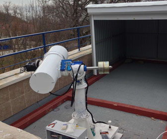
- Габаритные размеры ОЭК - 875×1096×490мм, (не более);
- Масса телескопа - 15,7кг (не более);
- Масса монтировки - 39,5кг (не более);
- Режимы работы ОЭК - автономный и по целеуказаниям;
- Управление ОЭК - дистанционное с АРМ операторов-наблюдателей;
- Зона контроля ОЭК - верхняя полусфера, ограниченная минимальным углом места 12° и высотами от 120 до 200 000 км;
- Скорость обзора неба при автономном поиске КО - 1200 кв.град/ч, (не менее);
- Пропускная способность ОЭК при решении задач с получением фотометрической информации по КО на интервале не менее 200 секунд - 10 КО/ч, (не менее);
- Частота фотометрирования КО ОЭК (длительность фотометрирования ограничена условиями наблюдаемости) - от 0,1 до 2Гц.
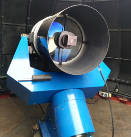
Характеристики:- Диаметр входного зрачка - 500 мм;
- Эффективное фокусное расстояние - 962 мм (1:1.92);
- Коэффициент центрального экранирования по диаметру - 0.36;
- Диапазон длин волн - 4500 - 8000 Å;
- Задний отрезок - 128 мм;
- Длина оптической системы - 1015 мм;
- Масса телескопа (труба с оптикой в сборе) - 60 кг;
- Частота фотометрирования КО ОЭК (длительность фотометрирования ограничена условиями наблюдаемости) - от 0,1 до 2Гц.
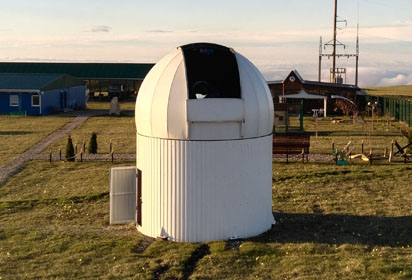
Характеристики с матрицей 36.9 х 36.9 мм:- Угловой диаметр поля зрения - 3.1 градуса (2.2 х 2.2 гр.);
- Линейный диаметр поля зрения - 52.1 мм;
- Среднеквадратический диаметр изображений звезды в интегральном диапазоне 4500-8000 Å (оптическая ось - край поля)- 2.0 - 4.6 мкм;
- Относительная освещенность по полю (оптическая ось - край поля) - 1.00 - 0.98;
- Угловой диаметр поля зрения - 5 градусов (3.6 х 3.6 гр.);
- Линейный диаметр поля зрения - 85 мм
- Среднеквадратический диаметр изображений звезды в интегральном диапазоне 4500-8000 Å (оптическая ось - край поля)- 2.2 - 8.6 мкм;
- Относительная освещенность по полю (оптическая ось - край поля) - 1.00 - 0.76;
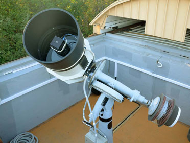
Оптико-электронное средство ОЭС65 (далее по тексту – ОЭС65) предназначено для автономного обнаружения, обнаружения в локальных зонах по целеуказаниям (ЦУ) от и последующего сопровождения космических объектов, в том числе фрагментов космического мусора, на низких, круговых полусуточных и высокоэллиптических орбитах.ОЭС65 является модульной конструкцией и оснащается оптико-электронным комплексом с оптическим модулем с апертурой 65 см (ОЭК65).
ОЭС65 позволяет проводить обзоры, измерение координат и фотометрию КО, в том числе фрагментов космического мусора и астероидов.
Оптико-электронный комплекс обеспечивает:
- Автономный поиск КО в негеостационарной области контроля, представляющей собой часть зоны контроля ОЭС на высотах от 3500 до 50000 км (область высокоэллиптических орбит с высотами апогея от 25000 до 50000 км, эксцентриситетами ≥0.2; область околокруговых орбит с высотами от 19000 до 21000 км, область прочих высокоорбитальных КО с высотами апогея более 3500 км с наклонениями от 0 до 180°), переориентируемую в пределах зоны контроля ОЭС;
- Поиск КО по ЦУ в диапазоне высот от 200 км до 200000 км;
- Получение координатной и некоординатной информации о КО в пределах зоны действия;
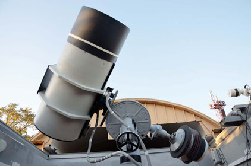
Оптико-электронное средство ОЭС65 включает оптико-электронный комплекс (оптический модуль с апертурой 65 см, установленный на опорно-поворотном устройстве) и программный модуль управления и обработки информации. В качестве приемника оптического излучения в оптическом модуле используется фотоприемное устройство на основе ПЗС-камеры.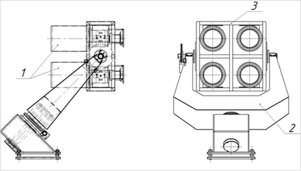
Характеристики:- Эффективное фокусное расстояние - 296 мм (1:1,54);
- Угловой диаметр поля зрения - 10°;
- Линейный диаметр поля зрения - 52,1 мм;
- Диапазон длин волн - 4500-8500 Å;
- Задний отрезок - 31 мм;
- Среднеквадратический диаметр изображений звезды в интегральном диапазоне 4500-8500 Å,оптическая ось – край поля - 3,0- 4,0 мкм;
- Коэффициент центрального экранирования по диаметру - 0,50;
- Относительная освещенность по полю (оптическая ось – край поля) - 1.00-0,75;
- Максимальная дисторсия изображения - 0,5%;
- Длина оптической схемы - 280 мм;
- Масса телескопа (труба с оптикой в сборе) - 21 кг
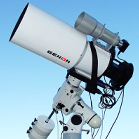
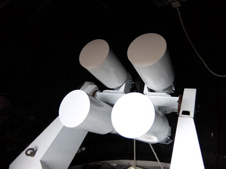
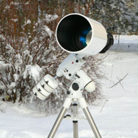
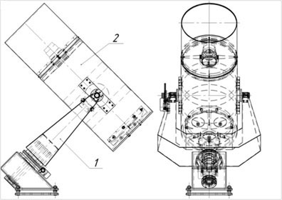
Характеристики:- Диаметр - 300 мм;
- Фокусное расстояние - 450 мм (1:1.5);
- Коэффициент центрального экранирования по диаметру - 0.50;
- Диапазон длин волн - 4500 - 8000 Å;
- Задний отрезок - 46 мм;
- Длина оптической системы - 430 мм;
- Масса телескопа ( труба с оптикой в сборе) - 29 кг;
- Угловой диаметр поля зрения - 6.7 градуса (4.8 х 4.8 гр.);
- Линейный диаметр поля зрения - 52.1 мм;
- Среднеквадратический диаметр изображений звезды в интегральном диапазоне 4500-8000Å, оптическая ось - край поля - 2.5 - 2.2 мкм;
- Относительная освещенность по полю, оптическая ось - край поля - 1.00 - 0.80;
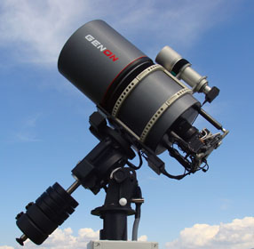
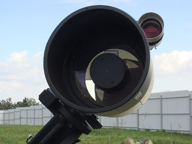
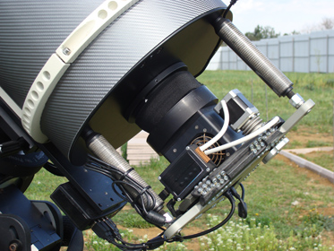